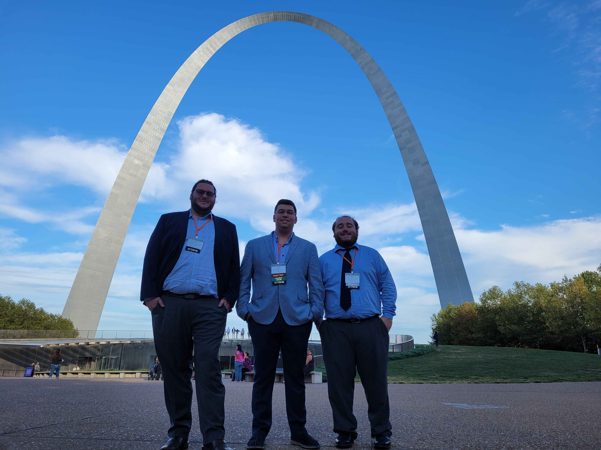

Welcome to the Design of Actuators, Robotics and Transducers Laboratory (DART Lab) in the department of Mechanical, Aerospace, and Industrial Engineering at UT San Antonio.

Welcome to the Design of Actuators, Robotics and Transducers Laboratory (DART Lab) in the department of Mechanical, Aerospace, and Industrial Engineering at UT San Antonio.

The DART Lab at UT San Antonio main area of research is to develop alternative battery compositions using materials such as silica, hydrogels, and silicon.
Our interest span from Multifuctional Materials (e.g., Lithium-ion batteries, multi-fibre composites, Liquid crystalline elastomers, hydrogels) , to Soft Robotics (e.g., Smart acutuators, compliant mechanisms, multi-energy harvesters, structural health monitoring) , and Design Optimization (e.g., Genetic algorithms, gradient based algorithms, shape matching, shape optimization).
Department of Mechanical, Aerospace, and Industrial Engineering UT San Antonio
We are a research group focused on development of batteries, with area of interests in energy harvesting and robotics